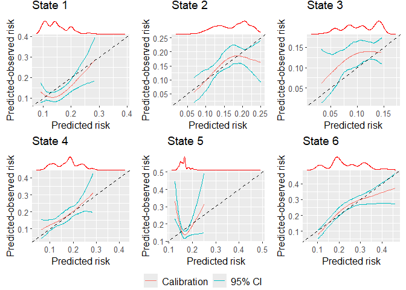

The goal of calibmsm is to provide a set of tools for estimating calibration plots when validating an existing (i.e. previously developed) multistate model. While the vignettes and articles for this package focus on assessing the calibration of a multistate model, calibration plots can also be produced for predicted risks from dynamic models, landmark super models, competing risks models and standard single outcome survival models, where predictions can be made at any landmark time.
For a detailed guide on how to use calibmsm please see the Overview vignette.
Installation
The package can be installed from CRAN as follows:
install.packages("calibmsm")You can install the development version of calibmsm from GitHub with:
# install.packages("devtools")
devtools::install_github("alexpate30/calibmsm")Example
This is a basic example which shows you how to assess the calibration of the transition probabilities at 5 years follow up for individuals out of state j = 1 at time s = 0 using the BLR-IPCW approach. Please see the Overview vignette for examples of how to assess calibration using the pseudo-value and MLR-IPCW approaches, as well as details of the methodology.
The predicted transition probabilities are stored in tps0, the individuals data are stored in ebmtcal, and the data in msdata format are stored in msebmtcal. Calibration curves are estimated using calib_msm using the BLR-IPCW method (calib.type = 'blr') with inverse probability of censoring weights are calculated based on variables year, age, prophylaxis and donor gender match. The calibration curves are estimated using restricted cubic splines with 3 knots. A 95% confidence interval is calculated using bootstrapping with 200 bootstrap replicates.
## Load calibmsm
library(calibmsm)
## Extract relevant predicted risks from tps0
tp_pred_s0 <- dplyr::select(dplyr::filter(tps0, j == 1), any_of(paste("pstate", 1:6, sep = "")))
## Calculate observed event probabilities
dat_calib_blr <-
calib_msm(data_ms = msebmtcal,
data_raw = ebmtcal,
j = 1,
s = 0,
t = 1826,
tp_pred = tp_pred_s0,
calib_type = "blr",
curve_type = "rcs",
rcs_nk = 3,
w_covs = c("year", "agecl", "proph", "match"),
CI = 95,
CI_R_boot = 200)We can then plot the calibration plots:
plot(dat_calib_blr, combine = TRUE, nrow = 2, ncol = 3, axis.titles.x = c(4,5,6), axis.titles.y = c(1,4), marg_density = FALSE)
If wanting to include marginal density plots (recommended, also the default) then the output is a gTable, that must then in turn be plotted, i.e:
marg_density_plot <- plot(dat_calib_blr, combine = TRUE, nrow = 2, ncol = 3, axis.titles.x = c(4,5,6), axis.titles.y = c(1,4))
plot(marg_density_plot)
At this step plot can also be replcaed by grid::grid.draw.
Getting help
If you encounter a bug, please file an issue with a minimal reproducible example on GitHub.